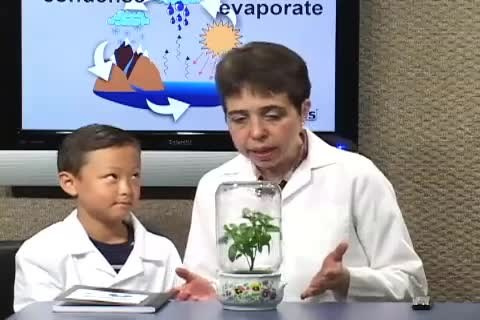

Quan sát
Where does the water on the inside of the glass come from?
Water cycle and plants
Con quan sát hơi nước đọng trong bình cây, theo dõi nước bay hơi rồi ngưng tụ, và chọn cây phù hợp với bình kín.

Nhiệm vụ của con
Con xem video, dùng mindmap sắp xếp ý, sau đó quay một video thuyết trình và một video trả lời năm câu hỏi nghe hiểu.
Where does the water on the inside of the glass come from?
Put these changes in order: drops return to soil, water evaporates, vapour condenses.
Why should you still check a terrarium even if water can move around inside it?
Con xem trọn video nhiều lần. Lắng nghe cách người nói giải thích và quan sát các ví dụ.
Con theo dõi sáu ý chính trên mindmap. Dùng từ khóa và hình ảnh để nhớ ý, không học thuộc một bài đọc sẵn.

Video 1
Con nhìn từ khóa để dẫn dắt bài nói. Trình bày đủ ý theo cách của mình.
Trình bày đầy đủ, rõ ràng; chú ý phát âm, ngữ điệu và biểu cảm. Không đọc nguyên bài đã viết sẵn.
Video 2
Con nghe lại video và trả lời cả năm câu bằng câu tiếng Anh đầy đủ. Khi câu hỏi hỏi vì sao, con cần giải thích lý do.
Câu hỏi của bài 28
Where does the water on the inside of the glass come from?
Put these changes in order: drops return to soil, water evaporates, vapour condenses.
Why may a closed terrarium need less watering than an open plant pot?
Would a cactus usually be a good choice for a tightly closed, damp jar? Why?
Why should you still check a terrarium even if water can move around inside it?
Trả lời đủ năm câu, đúng kiến thức trong video và mục Ghi nhớ khoa học (nếu có); dùng chi tiết phù hợp để giải thích.
Khi quay bài
Hoàn thành bài học
Con ghi đúng tên tiếng Anh, lớp và mã lớp. Mã bài SCIENCE-G2-28 đã điền sẵn; con giữ nguyên mã này.
Nộp bài SCIENCE-G2-28